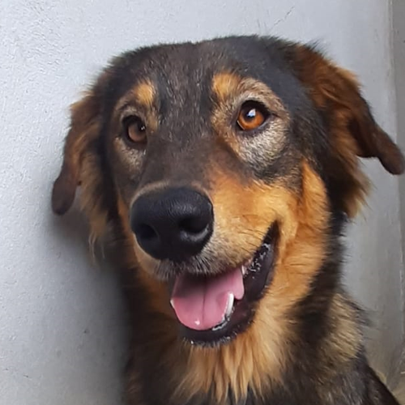
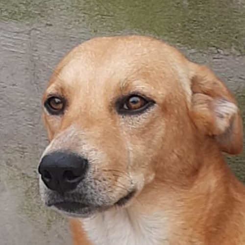
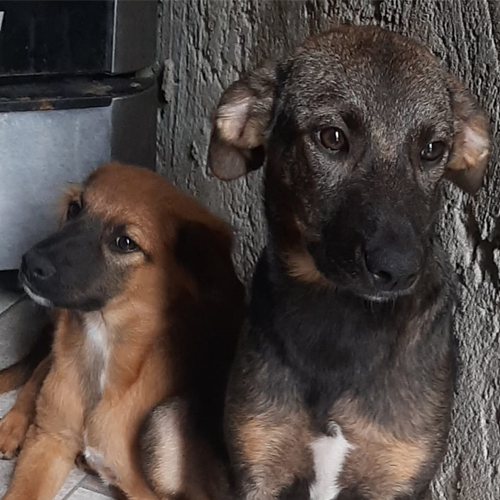

Este projeto tem o objetivo de administrar adoções de cachorros domésticos.
Muitas pessoas passam por situações diversas que não são mais possíveis cuidarem de seus amigos cães.
Por este motivo fundamos o projeto "Adote Meu Cão", partiu da necessidade de doar meus animais por falta de espaço no local. Procurei por diversas instituições para doar meus animais mas não aceitaram. Então resolvi criar este projeto para atender diversas pessoas que estão na mesma situação.
No início de Março de 2020 entrou em meu quintal uma cachorrinha a procura de um lar, ela era tão pequena que passou por uma fresta em meu portão. Minha família ficou encantada com a presença dela e logo nos apegamos a ela, procuramos na vizinhança quem era o dono(a) mas informaram que um carro não identificado abandonou-a e foi embora. Então resolvemos adotá-la, super alegre e divertida nos alegra até hoje.
Por um descuido ela teve a primeira cria pois já temos o Ted com 14 anos. Conseguimos doar quase todos os filhotes e ficamos com 2 deles.
Outro descuido ela teve a segunda cria, desta vez não conseguimos doar todos e ficaram ao todo 6 cachorros, sendo 3 machos e 3 fêmas, as fêmeas foram castradas para não acontecer novas crias.
Tentei doá-los mas algumas instituições não aceitaram. Percebi que outras pessoas estavam passando pela mesma situação que eu então resolvi criar este projeto para ajudar a todos
Lindo, esperto e brincalhão.
Lindo, esperto e brincalhão.
Da esquerda para a direita.
